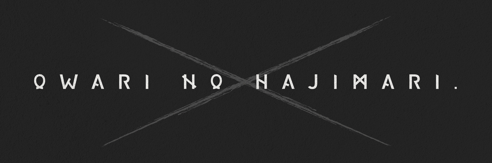

MUSIC / DESIGN / MOVIE / V-LIVER音楽、言葉、視覚、その先へ。
01 OFFICIAL

音楽を中心に、ひとつの世界をつくる。
楽曲、デザイン、映像、Vライバー。「終わりの始まり。」の活動と作品を、ここから。
02 PEOPLE / CREATIVE
FOUNDER / CREATIVE DIRECTION
「終わりの始まり。」発起人。言葉と作品、その世界観をかたちにする。
03 PEOPLE / V-LIVER
V-LIVER
配信、歌、そして「終わりの始まり。」の活動へ。
04 WATCH / LISTEN
MUSIC / MOVIE
映像と音楽で触れる、作品の世界。
SHORT VIDEO
ひとつの瞬間から、作品へ。
05 GOODS / DIGITAL
「終わりの始まり。」の世界観を、日常の中に。グッズとデジタルコンテンツ。
06 GET IN TOUCH
制作・活動に関するお問い合わせ